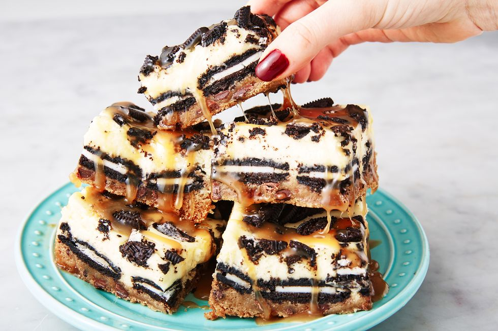

Oreo cheesecake bars

Delicious cheesecake bars
With layers of cookie dough, Oreo, and cheesecake, these are EVERYTHING.
The perfect dessert to finish any meal.
Ingredients
- 1 (16.5-oz.) log refrigerated chocolate chip cookie dough (such as Pillsbury)
- 20 Oreo cookies, plus more for topping
- 2 (8-oz.) blocks cream cheese, softened
- 1/2 c. granulated sugar
- 2 large eggs
- 1/2 tsp. pure vanilla extract
- Pinch of kosher salt
- Warm caramel, for drizzling
Steps
- Preheat oven to 325°. Line an 8"-x-8" baking dish with parchment paper with a 2" overhang.
Press cookie dough into bottom of baking dish.
- Top with a single layer of Oreos, breaking them up to fit, if necessary, and set aside.
- Make cheesecake layer: In a medium bowl using a handheld mixer or stand mixer with the paddle attachment,
beat cream cheese until smooth.
Beat in sugar, eggs, vanilla, and salt until fully combined.
Pour over Oreo layer and smooth top.
- Top with broken Oreo pieces and bake until the center is only slightly jiggly, 30 to 35 minutes.
- Refrigerate until completely chilled, at least 3 hours and up to overnight.
- Remove cheesecake bar from baking dish and slice. Drizzle with warm caramel before serving.